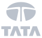
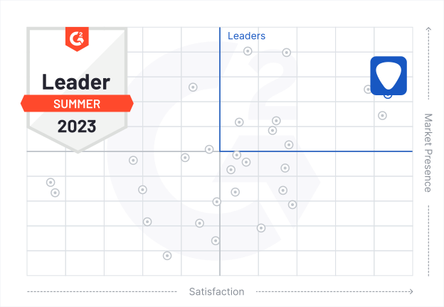

Trusted by hundreds of companies worldwide
Trusted by hundreds of companies worldwide

Market Leader for Customer Satisfaction
We’re recognized as the G2 Market Leader for Third Party & Supplier Risk Management Software, thanks to our high market presence and customer satisfaction score. Customers love the easy-to-use UpGuard platform and our ability to meet their ongoing third-party risk management needs.



"This is some text inside of a div block."

Meet Your Third-Party Risk Management Requirements
91% of G2 reviewers are satisfied with UpGuard’s ability to meet their third-party risk management requirements. Gain visibility of your third-party attack surface with continuous attack surface monitoring, instant security ratings, and third-party data leak detection capabilities.

Easy and Intuitive Vendor Risk Workflows
93% of G2 reviewers find the UpGuard platform easy to use. Automate your vendor risk assessments with pre-built security questionnaires, and accelerate the third-party remediation process with data-driven insights into high-risk threats and vulnerabilities.